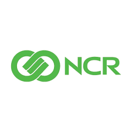

Madushan's Experience
Freelancer - Stable Diffsion
Online , 2023/11 - Present
- Training custom and personal LORA models for various use cases
- Providing consulting services to help clients to setup and use stable diffusion
- Consistent character development using stable diffusion
- Creating social media content for clients around the globe using stable diffusion
Engineering Intern
WindForce PLC
2022/07 - 2022/10
- Monitored wind power production through SCADA system
- Troubleshooted issues in the Wind Farm Communication Network
- Prepared documentation after various site- inspections
- Attended for periodical wind turbine maintenance activities

Trainee Customer Support Engineer
AT & T Global Information Solutions (Pvt) LTD
2022/03 - 2022/07
- Performed software & hardware upgrades & updates on live ATM machines
- Done software & hardware testing before deploying new ATM & CRM machines
- Fixed software bugs and other software related issues of live ATM machines
- Installed software and security features for new ATM/CRM machines
- Resolved a wide range of IT related issues of windows-based systems